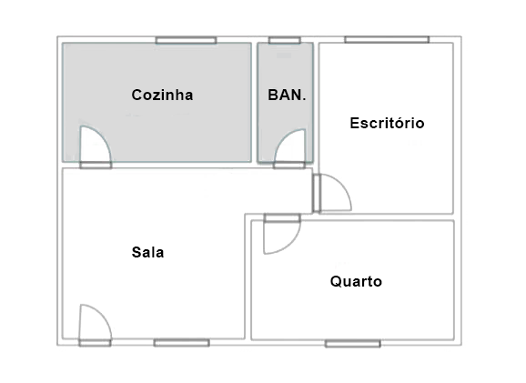

DIR-M: Construindo projetos com inteligência e propósito
Descubra como um método simples pode transformar a forma como entregamos valor em nossa empresa
Já imaginou construir a casa dos seus sonhos sem um plano? Ou pior, construí-la e só depois perceber que a sala é pequena demais ou que falta um banheiro essencial? Pois é, nos acompanhe na nossa analogia para apresentar o nosso novo método:
✨DIR-M✨
Discovery, Inception, Refining e Measuring
Para nos ajudar a planejar, construir e entregar soluções que realmente funcionam!
A Casa dos Sonhos e o Método DIR-M
Imagine que você e sua família decidiram construir a casa perfeita. Não qualquer casa, mas ✨casa dos sonhos✨. Onde começariam?
Não seria simplesmente comprando tijolos, certo? Primeiro, vocês teriam que entender profundamente o que precisam, o que gostam, como sonham viver naquele espaço. É exatamente isso que o DIR-M propõe.
1. 🔍 Discovery (Descoberta)
Na construção da casa: É a fase onde vocês sentam, conversam, rabiscam, visitam casas de amigos, olham revistas. "Precisamos de 3 quartos? Uma cozinha americana? Espaço para o cachorro? Uma piscina?" Vocês estão descobrindo todas as necessidades e desejos, e mais importante, o porquê de cada um deles. O objetivo não é desenhar a casa, mas entender o problema e a visão.
No nosso dia a dia (Time de Dados):
Entender a REAL DOR da área de negócios. Qual problema eles tentam resolver?
Qual o objetivo final? O que se espera alcançar com essa solução de dados?
Quais dados temos? São suficientes? Precisamos de algo a mais?
Definir claramente o problema e as hipóteses de como nossos dados podem ajudar.

Com as ideias claras, é hora de colocar a mão na massa...
mas com inteligência!
2. 💡 Inception (Início/Planejamento Inicial)
Na construção da casa: Com base na descoberta, vocês criam um "rascunho" inicial da casa – uma planta baixa bem simples. "Vamos começar com o básico: cozinha, quarto, banheiro. Dali, vamos evoluir!" É o nosso MVP (Mínimo Produto Viável) da casa. Ainda não é a casa dos sonhos, mas já dá pra ter uma ideia e testar!
No nosso dia a dia (Time de Dados):
Definir um MVP de dados: a entrega mais simples que já gere valor e nos ajude a validar a hipótese.
Determinar o escopo inicial: quais dados, quais ferramentas, quem será impactado.
Alinhar as expectativas com as áreas de negócio sobre o que será entregue neste primeiro "rascunho".
A estrutura está de pé! Agora é hora de
construir, aprimorar e adaptar.
3. 🛠️ Refining (Refinamento)
Na construção da casa: A estrutura básica da casa está pronta. Agora, a cada semana, vocês revisitam a obra com o arquiteto e o empreiteiro. "Essa parede poderia ser um pouco mais pra lá? Que tal adicionar uma janela aqui? O espaço da churrasqueira cabe melhor do outro lado?" Vocês estão refinando, ajustando, adicionando e melhorando com base na experiência real de estar na casa (ainda que incompleta) e no feedback contínuo.
No nosso dia a dia (Time de Dados):
Desenvolvimento iterativo em ciclos curtos (sprints).
Priorização do que realmente agrega valor para refinar o backlog.
Aprimorar modelos, dashboards e fontes de dados com base nas necessidades reais.
A casa está pronta! Mas será que ela realmente atendeu aos seus
sonhos e planos iniciais?
4. 📊 Measuring (Medição)
Na construção da casa: A família se muda! Mas a jornada não termina. "Estamos usando o espaço do jeito que imaginamos? A piscina é divertida, mas dá muito trabalho? A cozinha é realmente funcional? O que poderíamos ter feito diferente?" Vocês estão medindo a satisfação, o uso e o real impacto da casa nos seus dias. Essa análise ajuda a planejar futuras melhorias ou até a próxima casa!
No nosso dia a dia (Time de Dados):
Monitorar as métricas de sucesso que definimos lá no início (na Inception).
Avaliar o impacto real da nossa solução: Atingimos os objetivos? Geramos o valor esperado?
Analisar o ROI (Retorno sobre o Investimento) do nosso trabalho.
Os resultados da medição alimentam um novo ciclo de Discovery para novas oportunidades!
Pronto para Construir um Futuro Mais Inteligente?
O DIR-M é o nosso guia para garantir que cada tijolo (ou cada linha de código, cada dashboard, cada insight) que adicionamos aos nossos projetos seja colocado com propósito e gere o máximo de valor.